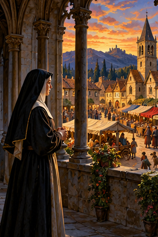
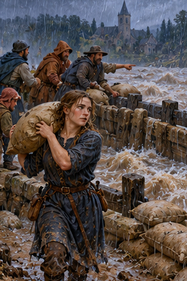
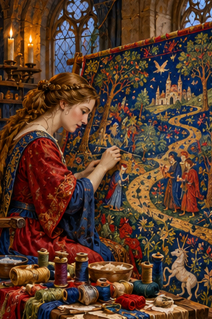
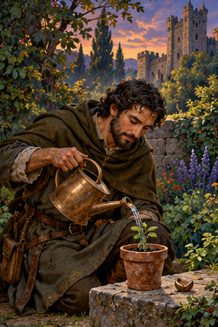
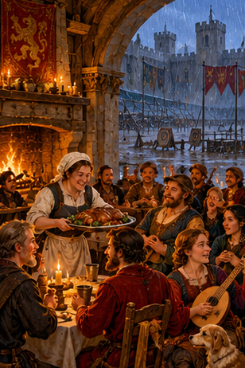
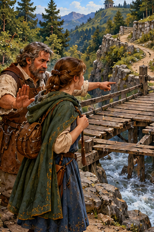
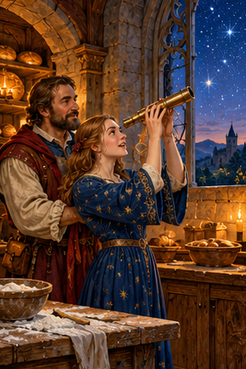

PDD Batch 22 — review only
Ten 308×462 portraits, in manifest order. Not installed.
Original composite
1. PDD 237 — La vida es puro ruido entre dos silencios abismales.
pdd237.jpg2. PDD 238 — La felicidad que se vive deriva del amor que se da
pdd238.jpg
3. PDD 239 — Todos tenemos una reserva de fuerza interior insospechada, que surge cuando la vida nos pone a prueba
pdd239.jpg
4. PDD 240 — La vida es una tapicería que se borda día a día con hilos de muchos colores
pdd240.jpg
5. PDD 241 — Sea lo que sea” 🌿
pdd241.jpg6. PDD 242 — por si las moscas
pdd242.jpg
7. PDD 243 — de todos modos
pdd243.jpg
8. PDD 244 — hazme caso
pdd244.jpg9. PDD 245 — a fin de cuentas/al fin y a cabo
pdd245.jpg
10. PDD 246 — El verdadero amor no es otra cosa que el deseo inevitable de ayudar al otro para que sea quien es
pdd246.jpg